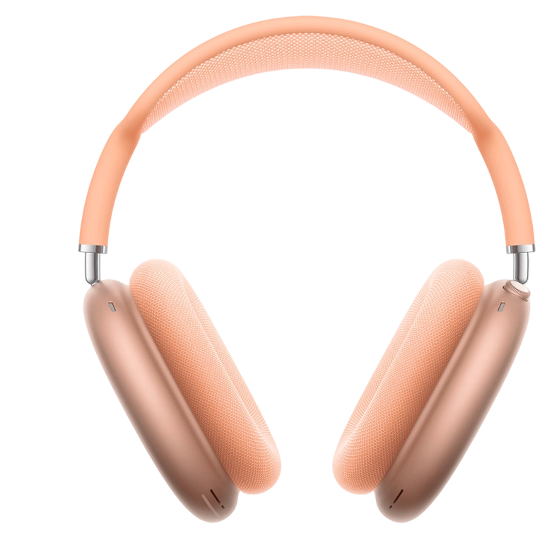
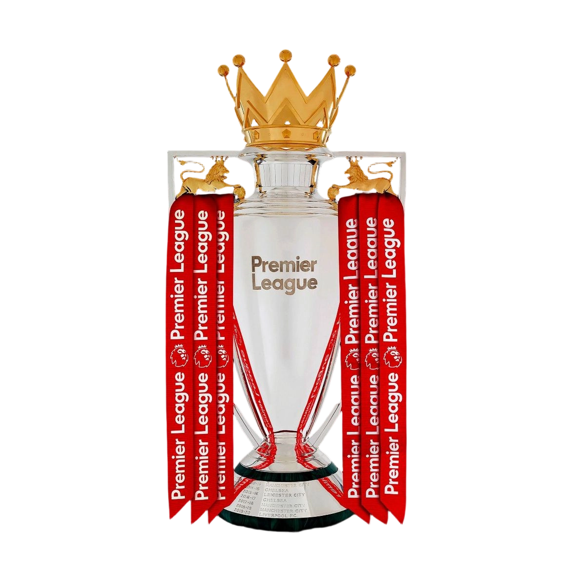
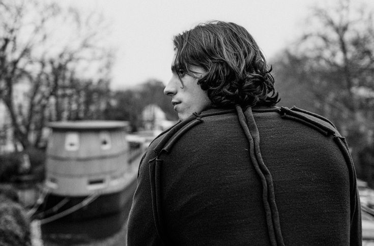

Feature Profile
 Signature Look
Signature Look
 Match Essentials
Match Essentials

Pre-match vibe
Glory days
The Art of Defending
Riccardo Calafiori
"What though the field be lost, All is not lost; the unconquerable will, And courage never to submit or yield."
Written by John Milton, Paradise Lost